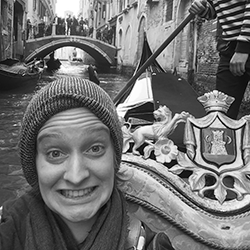
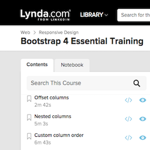
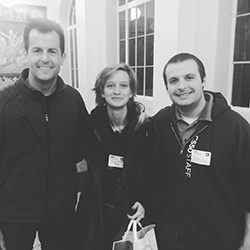

“Hi, I’m Ingrid”
I have completed studying a level two, City and Guilds, Certificate in Web Development at ELATT, East London.
At ELATT, I learned how to design and build colaboratively to create intuitive web applications that meet clients' and users' needs.

Online Learning
Other than my level two certificate I am also supplimenting my learning with online courses in HTML 5, CSS3, Javascript and UX, using reputable training libraries like
Codecademy,
Code School,
Lynda.com and
EdX.

Networking
I know how important it is to network and keep up with new technologies and trends and therefore attend weekly meetups, hackathons and free workshops around Bristol including CodeHub and Women's Tech Hub and I have also previously had the priviledge of going to Harvard’s CS50 Hackathon, hosted by University of London.